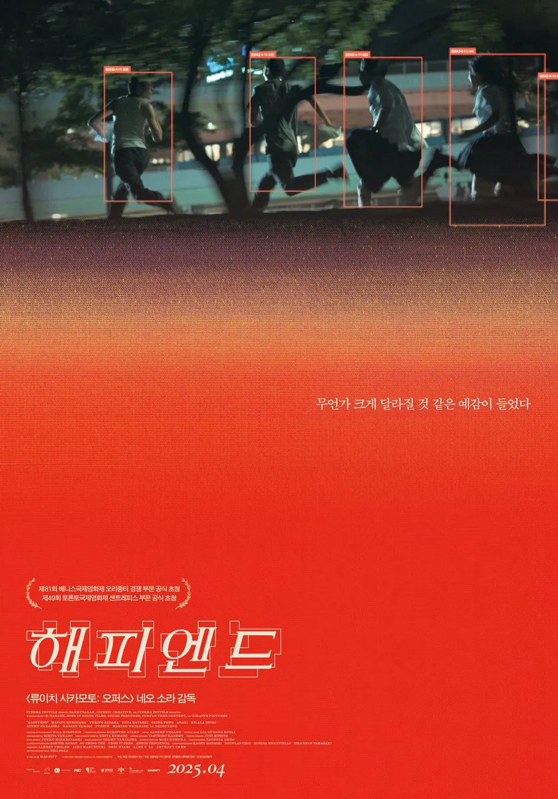
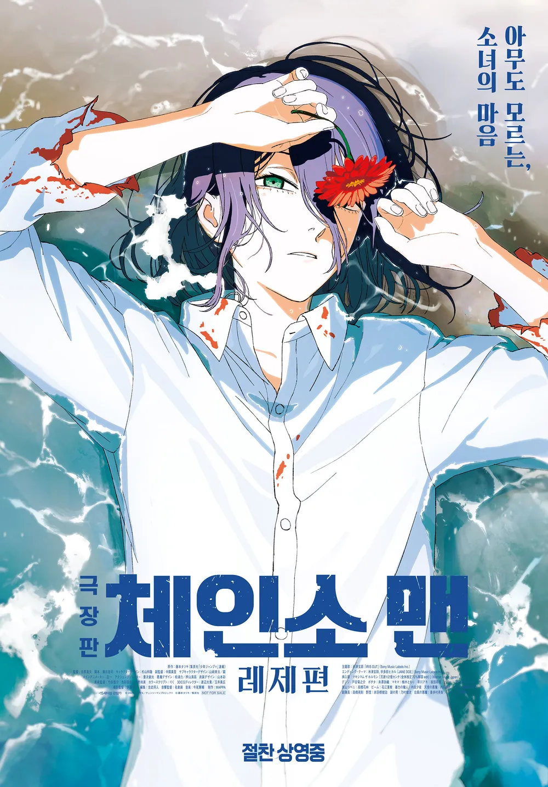
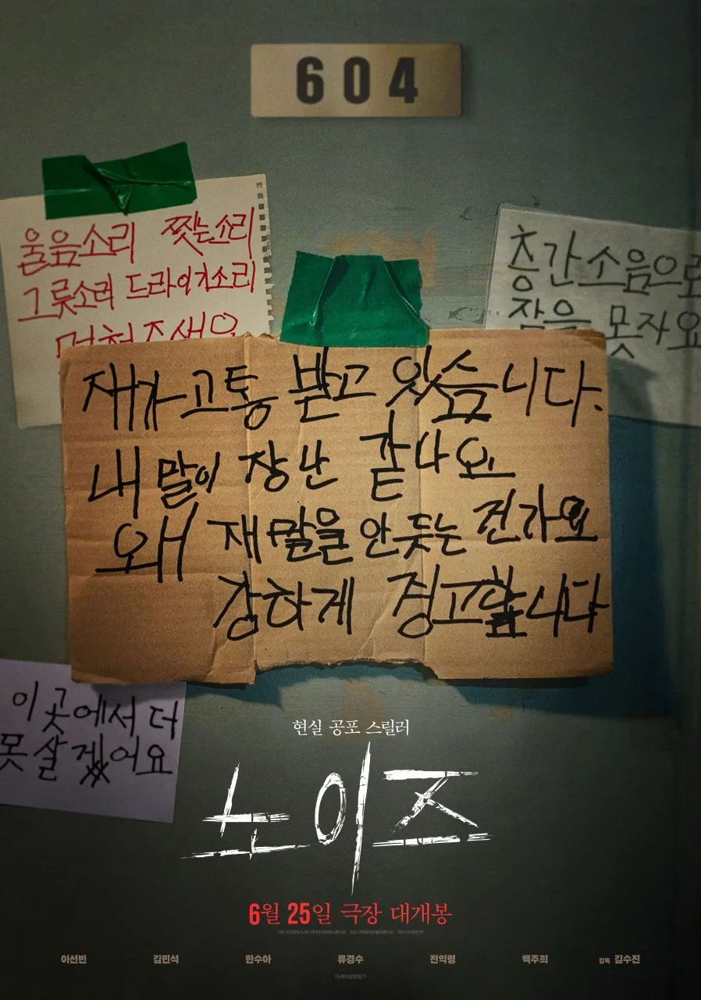
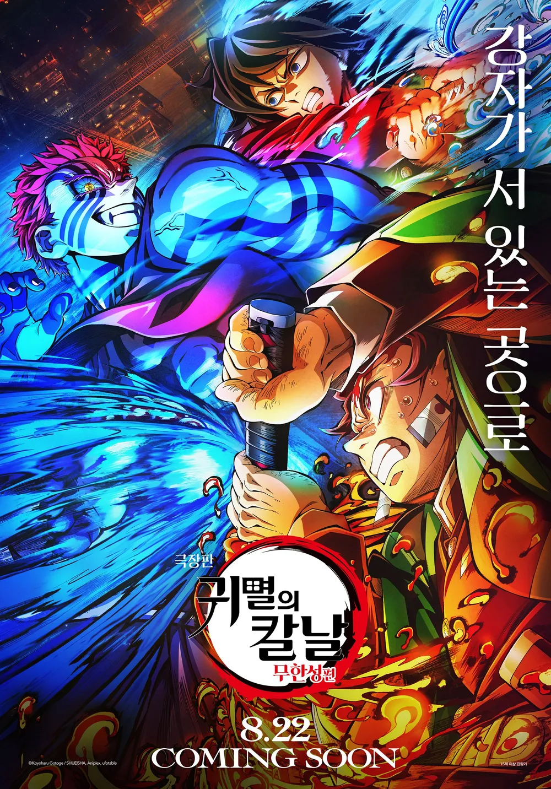

CinemaLog

해피엔드
평점: ⭐⭐⭐⭐
이유 : 연출 방법이 되게 예술작품 보는 듯한 느낌이 들었당. OST가 엄청 웅장해서 계속 기억에 남았고 풋풋한 주인공들을 응원하게됨

체인소맨 레제편
평점: ⭐⭐⭐⭐⭐
이유 : 영화 내내 지루한 부분없이 알찼고 레제가 너무 예쁘다 목소리도 넘 조음

노이즈
평점: ⭐⭐⭐
이유 : 반전은 재밌었지만 예상했던거랑은 다르게 그냥 단순히 놀래키고 싶어서 만든 영화같다는 생각이 들었당...기대가 넘 컸던 것 같다ㅠㅠ

귀멸의 칼날 무한성편
평점: ⭐⭐⭐⭐⭐
이유 : 전투씬에서 숨참으면서 봤다 하필 주요인물 과거 회상장면에 화장실 갔다와서 친구 우는동안 화장실간거 후회하고 있었다..